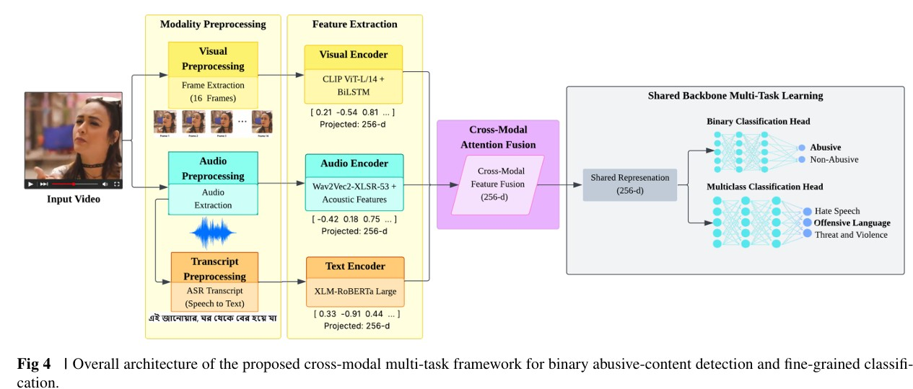

Multimodal Artificial Intelligence
Cross-modal learning and reasoning from text, images, video, and audio.
I am an AI researcher with research interests in Multimodal Artificial Intelligence, Computer Vision, Video Understanding, Vision-Language Models, Generative AI, and Trustworthy AI.
I completed my B.Sc. in Computer Science and Engineering from Chittagong University of Engineering and Technology (CUET), Bangladesh, with a CGPA of 3.70/4.00.
My undergraduate thesis focused on multimodal abusive video detection, integrating textual, visual, and audio information through cross-modal attention and multi-task learning, with explainable AI techniques for interpreting model predictions. This work strengthened my interest in multimodal content understanding.
I am seeking fully funded M.Sc. or Ph.D. opportunities to pursue advanced research in Multimodal AI, particularly in Computer Vision, Video Understanding, Vision-Language Models, Generative AI, and Trustworthy AI.
Cross-modal learning and reasoning from text, images, video, and audio.
Visual recognition, temporal analysis, and complex video understanding.
Visual-language alignment, grounded understanding, and multimodal reasoning.
Language representation and understanding for multilingual and low-resource settings.
Generative modeling, intelligent reasoning, and AI-generated content understanding.
Explainability, robustness, safety, fairness, and responsible AI.

Explainable multimodal learning for abusive content detection in online videos.
Developed a multimodal framework integrating text, visual, and audio features to identify abusive content in Bangla-English online videos.
The framework combines XLM-RoBERTa, CLIP, and Wav2Vec2 with cross-modal attention, multi-task learning, and explainable AI techniques.
Chattogram, Bangladesh
Graduated July 2026
CGPA: 3.70 / 4.00
Academic Excellence: Achieved an average CGPA of 3.85+ over the final five semesters.
Merit-Based Scholarship: Received a technical scholarship for all 8 semesters of the undergraduate program.
Chattogram, Bangladesh
2020
GPA: 5.00 / 5.00
Chattogram, Bangladesh
2018
GPA: 5.00 / 5.00
Completed the 2026 Aspire Leaders Program by Aspire Institute.
Published four research papers as a research author.
Published two research papers at SemEval 2026, co-located with ACL 2026: “Invariance-Oriented Representation Learning for Robust AI-Generated Code Detection” and “Disentangling Logical Validity from Semantic Plausibility through Canonical Abstraction.”
Successfully completed my undergraduate thesis on multimodal abusive video content detection with A+ (4.00/4.00).
Published “A LangChain-Based Framework for Investigative Question Generation Using Large Language Models” in the TREC 2025 DRAGUN track proceedings.
I am open to fully funded graduate research opportunities and academic collaborations. I welcome inquiries regarding prospective research opportunities, scholarly discussions, and professional engagements.
shitichowdhury21@gmail.com